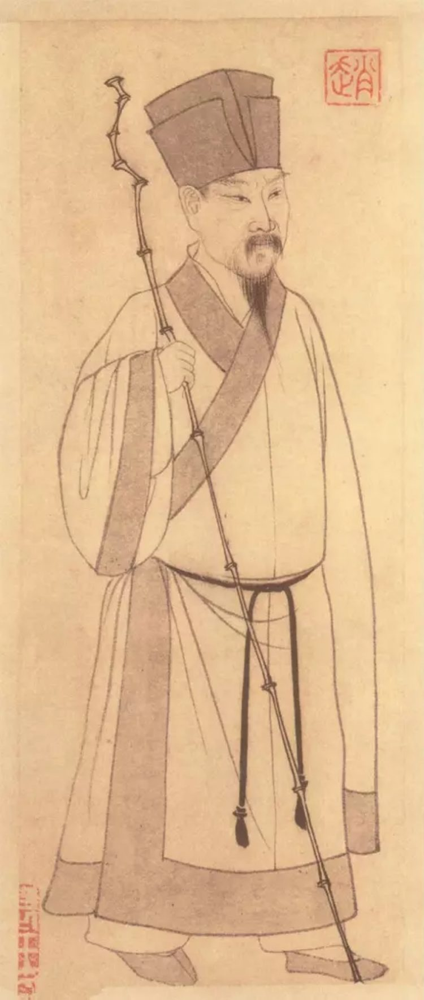
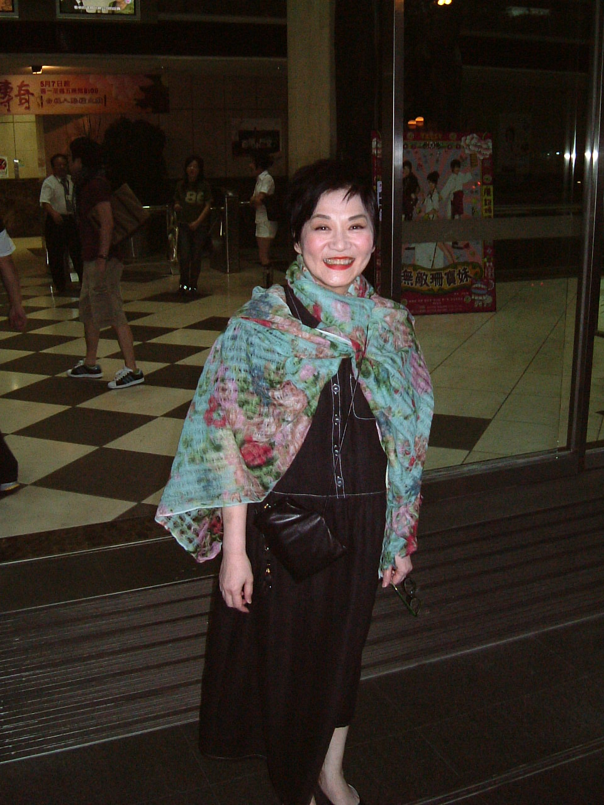

退休後的身心覺察與情緒修復
退休後的心靈自由，
從學會與情緒相處開始。
看待退休後的生活變遷
看見它、叫出它的名字
調節壓力與不安
有的請舉手，講師點一下。可以選很多個。
身體的訊號，常常比腦袋更早提醒我們
這些也可能是身體疾病的症狀；持續不舒服，請先給醫師檢查。
「也無風雨也無晴」——是誰寫的？

從京城的大官，一路被貶到偏遠的黃州。
一蓑煙雨任平生—— 蘇軾〈定風波〉
詞序記「三月七日，沙湖道中遇雨」；作於元豐五年（1082）為後人編年之通說。畫像：元 趙孟頫（公有領域）。
沒有標準答案，大家說的版本可能更好
退休前後，哪件事讓我最不習慣？
那時候，我是怎麼走過來的？
現在回頭看，我會怎麼說它？
只說自己願意說的；聽的人不給建議，只要聽
等一下回來，我們聽三個人的故事
不逃避，
承認事情發生了
不怨嘆，
接受現在的樣子
盡力做，
能做多少算多少
做完了，
就不再掛在心上
出處：法鼓山「心五四運動」（1999 年提出），四它為「解決困境的主張」。各步驟的白話說明為本簡報改寫。
四個「它」，還記得順序嗎？
哪一句話，讓您點了頭？
最近有哪件事，可以拿來試試？
法鼓山DDM官方頻道〈轉換心情好方法—面對它、接受它、處理它、放下它〉
大家口中的「孫叔叔」。
退下來，不是結束；
是把力氣用在更在乎的事。
資料：中央社 2018/5/2 報導。末兩行為本簡報的歸納。照片：Rico Shen，CC BY-SA 4.0（Wikimedia Commons）。
您印象中的孫叔叔，是什麼樣子？
他為什麼決定離開演藝圈？
退下來之後，我想把力氣用在哪？
Rti 中央廣播電臺〈終身公益志工・孫越│臺灣人ㄟ故事〉

陪了台灣觀眾幾十年的聲音。
她說過，傷心不能拿來當飯吃。
資料：《今周刊》第 1061 期（2017/4/20）專訪。末句為轉述大意。照片：竹筍弟弟，自由使用（Wikimedia Commons）。
平常緊張時，您都怎麼呼吸？
注意肚子是怎麼動的
下一頁，跟著畫面一起練習
良醫健康網〈【健康問良醫】1min腹式呼吸教學〉
坐穩，肩膀放鬆
鼻子吸氣，心裡數到 4
嘴巴吐氣，心裡數到 6
吸氣 4 秒 · 吐氣 6 秒
照自己舒服的速度就好；頭暈或不舒服就停下來，恢復平常呼吸。
說自己的心情，
不是對方的錯
講看得到的事，
不翻舊帳
講一件具體、
對方做得到的事
心理學上叫「我訊息」：同一件事，對方比較聽得進去
請兩位學員上來演一次：先演原句，再演改寫版
不必是大事：飯很好吃、
公車剛好來、孫子打電話來。
效果在研究追蹤的六個月內都看得到。後來的重複研究結果不完全一致，所以把它當成值得一試的好習慣。
Seligman, Steen, Park & Peterson (2005). American Psychologist, 60(5), 410–421.
今天，讓我微笑的一件小事
我想謝謝的一個人
我想謝謝自己的一件事
讓退休生活的每一天，都充滿愉悅與從容
台灣 65 歲以上的長者，大約多少比例有憂鬱的狀況？
國健署《民國 112 年中老年身心社會生活狀況長期追蹤調查》：65 歲以上 13.3%。這是量表自述的憂鬱症狀，不等於憂鬱症診斷。
生活的打擊、長期的壓力、身體的疾病、體質，常常是加在一起的。全球約有 4% 的人受憂鬱症影響。
WHO. Depressive disorder (depression) fact sheet, 2026.
親人過世、睡不好、行動或生活不方便、以前憂鬱過、女性。
Cole & Dendukuri (2003). Am J Psychiatry, 160(6), 1147–1156.
「不是想太多、不是不夠堅強」是本簡報依上述研究所做的白話說明。
研究估計，約一到兩成的憂鬱和孤單感有關。
Lee et al. (2021). Lancet Psychiatry, 8(1), 48–57.
睡不好不只是結果，也可能是開頭。連續兩個禮拜睡不好，值得跟醫師說。
Baglioni et al. (2011). J Affect Disord, 135(1–3), 10–19.
研究對象是成人的重度憂鬱症。哪一種藥適合、要吃多久，需要醫師評估。
Cipriani et al. (2018). Lancet, 391(10128), 1357–1366.
幾種主要的心理治療效果都不錯，彼此差別不大；多數在一年後仍看得到效果。
Cuijpers et al. (2021). World Psychiatry, 20(2), 283–293.
一年後，症狀減輕一半以上的人：團隊照顧組 45%，一般看診組 19%。
Unützer et al. (2002). JAMA, 288(22), 2836–2845.（IMPACT 試驗）
不等心情好才行動，先安排愉快、有意義的小事。研究多為小型試驗，結果要保守看待。
Orgeta, Brede & Livingston (2017). Br J Psychiatry, 211(5), 274–279.
作者也提醒：這些研究的品質參差，證據的把握程度偏低。
Noetel et al. (2024). BMJ, 384, e075847.
已經在吃藥的人，不要自己停藥或減藥。有傷害自己的念頭，請馬上撥 1925 或就醫。
整體低了一成多；在長輩身上，差距還更明顯一點。
Schuch et al. (2018). Am J Psychiatry, 175(7), 631–648.
相反地，看電視的時間長、白天常小睡，則和憂鬱風險較高有關。
Choi et al. (2020). Am J Psychiatry, 177(10), 944–954.
死亡風險和行動受限的風險也比較低。100 小時，大約是每週兩小時。
Kim et al. (2020). Am J Prev Med, 59(2), 176–186.
同一份研究裡，「被診斷憂鬱症」的比例並沒有明顯差別。身體本來就好的人，也比較有力氣當志工。
散步、做家事、
到據點上課都算
家人、老朋友、鄰居，
或今天坐隔壁的同學
連續兩個禮拜睡不好，
就跟醫師說
心情低落超過兩個禮拜、影響到生活，請找醫師，不要自己撐
0 從來沒有 · 1 偶爾 · 2 不到一半時間 · 3 超過一半時間 · 4 大部分時間 · 5 一直都是
這是自我檢查，不是診斷。
WHO-5 Well-Being Index © WHO，CC BY-NC-SA 3.0 IGO。中文為本簡報自行翻譯，非世界衛生組織製作，WHO 不對譯文內容負責，以英文原版為準。
問最近一週的睡眠、緊張、
苦惱、低落和自信。
臺大李明濱教授團隊編製。
0–5 良好 · 6–9 輕度
10–14 中度 · 15 以上重度
分數高，請找專業協助。
台灣自殺防治學會的
免費 App，做完會給建議
和求助資源。
Lee MB et al. (2003). J Formos Med Assoc, 102, 687–694。量表題目有版權，本簡報不轉載題目內容。
衛福部。24 小時、全年無休、免付費的心理諮詢。
心情低落、想找人說話時的協談專線。
白天與晚間時段的電話輔導（非 24 小時）。
各縣市都有心理諮商服務；收費與預約方式，請問當地衛生局。
住家附近就有：共餐、健康促進、電話問安、有人作伴。
睡不好、吃不下超過兩個禮拜，先請醫師看看。
專線資訊查核於 2026 年 11 月；1995、1980 的通話費依電信業者而定。請換上本地據點與衛生所的實際電話。
寫下今天的三件好事
今天的心情是什麼顏色？
用三句式，對一個人說一次話
下次上課，請帶一件好事來分享